前言
Oracle
Database，又名Oracle RDBMS，或简称Oracle。
是甲骨文公司的一款关系数据库管理系统。它是在数据库领域一直处于领先地位的产品。Oracle数据
库系统是世界
上流行的关系数据库管理系统，系统可移植性好、使用方便、功能强，适用于各类大、中、小微机环境。它是一种
高效率的、可靠性好的、适应高吞吐量的数据库方案。
1 安装准备 CentOS Linux release 7.5.1804
下载预安装包 /opt/LINUX.X64_213000_db_home.zip
(下载时有另一个文件:
oracle-database-preinstall***.rpm
没有用处!!)
centos 7.5、Xmanager Enterprise 5、zysong.ttf（字体）、oracle12c：
文件解压：/run/media
/catalyst/IBBWORK/toolsbak/oracle19c
yum install xorg-x11-fonts* （字体）
2.系统要求
官方建议内存空间至少1G，交换分区应为内存空间2倍以上
说明：通常Swap空间的大小应是物理内存的2-2.5倍，特别是数据库 服务器和Web服务器，随着访问量的增加，对Swap空间的要求也会增加
2.1.查看磁盘大小
(base) [catalyst@localhost ~]$ df -h (201 jifang)
文件系统
容量 已用 可用 已用% 挂载点
/dev/voi0p3 440G
7.1G 411G 2% /
devtmpfs
7.7G 0
7.7G 0% /dev
tmpfs
7.7G 36M 7.7G 1%
/dev/shm
tmpfs
7.7G 9.9M 7.7G 1% /run
tmpfs
7.7G 0
7.7G 0% /sys/fs/cgroup
/dev/voi0p2 976M
129M 781M 15% /boot
/dev/voi0p4 20G
121M 19G 1% /home
/dev/voi0p1 1022M 9.8M
1013M 1% /boot/efi
tmpfs
1.6G 44K 1.6G 1%
/run/user/1000
/dev/sdb1 1.9T
1016G 848G 55%
/run/media/admin/officegyh
2.2. 查看交换分区大小
若不满足，需要修改交换分区大小
(base) [catalyst@localhost ~]$ free -m
total
used
free shared
buff/cache available
Mem:
15662
2012
3081
93
10568 13156
Swap:
8191
0 8191
3.关闭防火墙以及Selinux: Active: inactive (dead)
(base) [catalyst@localhost ~]$ systemctl stop
firewalld.service
(base) [catalyst@localhost ~]$ systemctl status
firewalld.service
● firewalld.service - firewalld - dynamic firewall
daemon
Loaded: loaded
(/usr/lib/systemd/system/firewalld.service; enabled;
vendor preset: enabled)
Active: inactive (dead) since Sun
2022-07-17 10:06:19 CST; 21s ago
Docs: man:firewalld(1)
Process: 1076 ExecStart=/usr/sbin/firewalld
--nofork --nopid $FIREWALLD_ARGS (code=exited,
status=0/SUCCESS)
Main PID: 1076 (code=exited, status=0/SUCCESS)
//egrep "SELINUX=enforcing"
/etc/selinux/config ===> SELINUX=enforcing
//systemctl disable firewalld.service
禁止防火墙启动
//systemctl status firewalld.service
or: vi /etc/selinux/config
SELINUX=disabled
#直接关闭selinux //or: sed
-i s#SELINUX=enforcing#SELINUX=disabled#g
/etc/selinux/config => egrep
"SELINUX=disabled" /etc/selinux/config
setenforce 0///?????????
4.yum 安装必要安装包
//yum install gcc gcc-c++
yum install binutils compat-libcap1
compat-libstdc++ dtrace-modules
dtrace-modules-headers
dtrace-modules-provider-headers dtrace-utils
elfutils-libelf elfutils-libelf-devel
fontconfig-devel glibc glibc-devel ksh libaio
libaio-devel libdtrace-ctf-devel libX11 libXau libXi
libXtst libXrender libXrender-devel libgcc
librdmacm-devel libstdc++ libstdc++-devel libxcb
///////atalyst]# yum install compat-libcapl UnixOD
compat-libstdc++-33
///yum install compat-libstdc++-33 libstdc++
libstdc++-devel make sysstat unixODBC unixODBC-devel
yum install binutils.x86_64 compat-libcap1.x86_64
gcc.x86_64 gcc-c.x86_64 glibc.i686 glibc.x86_64
glibc-devel.i686 glibc-devel.x86_64 ksh
compat-libstdc-33 libaio.i686 libaio.x86_64
libaio-devel.i686 libaio-devel.x86_64 libgcc.i686
libgcc.x86_64 libstdc.i686 libstdc.x86_64
libstdc-devel.i686 libstdc-devel.x86_64 libXi.i686
libXi.x86_64 libXtst.i686 libXtst.x86_64 make.x86_64
sysstat.x86_64 zip unzip
oracle 安装时先决条件检查会检测下面是否安装完成
下载 compat-libstdc++-33-3.2.3-72.el7.x86_64.rpm(已下载到移动盘)
5. 调整系统内核参数
vi /etc/sysctl.conf fs.aio-max-nr = 1048576#异步IO请求数目 推荐值是：1048576 其实它等于 1024*1024 也就是 1024K 个fs.file-max = 681574446053680#打开的文件句柄的最大数量,防止文件描述符耗尽的问题#共享内存总量 页为单位,内存除以4K所得 kernel.shmall =#单个共享内存段的最大值 kernel.shmmax = 8589934592 # 1/2物理内存大小 #共享内存段的最小数量缺省值4096 kernel.shmmni = 4096 kernel.sem = 250 32000 100 128 #SEMMSL: 每个信号集的最大信号数量 ,（Oracle建议其值不少于100.） #SEMMNS：用于控制整个 Linux 系统中信号的最大数 #SEMOPM： 内核参数用于控制每个 semop 系统调用可以执行的信号操作的数量 （Oracle建议其值不少于100.） #SEMMNI ：内核参数用于控制整个 Linux 系统中信号集的最大数量（Oracle建议其值不少于100.） #用于向外连接的端口范围 net.ipv4.ip_local_port_range = 9000 65500 #套接字接收缓冲区大小的缺省值 net.core.rmem_default = 262144 #套接字接收缓冲区大小的最大值 net.core.rmem_max = 4194304 #套接字发送缓冲区大小的缺省值 net.core.wmem_default = 262144 #套接字发送缓冲区大小的最大值 net.core.wmem_max = 1048576 # 以上保存后：#sysctl -p#加载配置文件
1）kernel.shmall:共享内存页数的最大值
Linux共享内存页大小为4KB,共享内存段的大小都是共享内存页大小的整数倍。一个共享内存段的最大值可以
设置为16G，比如16G内存，则对应需要共享内存页数为16GB/4KB=16777216KB
/4k（getconfPAGESIZE可得到）= 4194304（页）
2) kernel.shmmax:单个共享内存段的最大值
Shmma设置应足够大，设置过低可能导致需要创建多个共享内存段，导致系统性能下降，一般情况下，设置最大共
享内存为物理内存的一半，如物理内存是2G,则可以设置最大共享内存为110241024*1024
= 1073741824，以此类推， kernel.shmmax= 8589934592
kernel.shmall=4194304
6. 用户及安装目录配置
6.1. 新建oinstall,dba,oper组
groupadd oinstall #添加组 groupadd dba #添加组 groupadd oper #添加组 useradd -g oinstall -G dba,oper oracle(not use this, just use catalyst !!!!!!) passwd oracle #修改主机oracle用户的密码 默认123456-G用户组，用户组 指定用户所属的附加组。
root]# usermod -G dba,oper admin //-g用户组 指定用户所属的用户组。
root]# usermod -g oinstall admin //
chmod -g -s /opt/app/admin
将以下内容添加到/etc/security/limits.conf 中。该内容是Oracle用户的一些限制
admin soft nproc 2047 //single user can use process number
admin hard nproc 16384
admin soft nofile 1024 //user can open file number
admin hard nofile 65536
admin soft stack 10240 //set stack
6.2. 新建目录
mkdir -p /opt/app/admin/product/21.3.000/db_home
mkdir -p /opt/app/oraInventory
unzip /opt/LINUX.X64_213000_db_home.zip -d
/opt/app/admin/product/21.3.000/db_home/ (OK
for 21.3)
cd /opt/app/admin/product/21.3.000/db_home
chown -R admin:oinstall /opt/app/admin
chown -R admin:oinstall
/opt/app/admin/product/21.3.000/db_home
chmod -R 775 /opt/app/admin
修改oracle目录的权限
chown -R admin:oinstall /opt/app/oraInventory
6.3. 修改目录的属主，属组
chown -R admin:oinstall /opt/app/
7.Oracle 用户环境配置
7.1. 修改oracle环境变量
su - admin vi /home/admin/.bash_profile #权限（反码）
umask 022
#oracle的BASE目录定义
ORACLE_BASE=/opt/app/admin
#oracle的HOME目录定义
ORACLE_HOME=/opt/app/admin/product/21.3.000/db_home/
#设置SID
ORACLE_SID=drugdb
ORACLE_UNQNAME=drugdb
NLS_DATE_FORMAT="YYYY:MM:DDHH24:MI:SS"
#简体中文版
NLS_LANG="SIMPLIFIED CHINESE_CHINA".UTF8
export TNS_ADMIN=$ORACLE_HOME/network/admin
export ORA_NLS11=$ORACLE_HOME/nls/data
#重新定义系统环境变量
PATH=$PATH:$HOME/.local/bin:$HOME/bin:$ORACLE_HOME/bin
#定义语系
LANG=zh_CN.UTF-8
#导入系统变量export PATH LANG NLS_DATE_FORMAT NLS_LANG ORACLE_BASE ORACLE_HOME ORACLE_SID ORACLE_UNQNAME
export LD_LIBRARY_PATH=$LD_LIBRARY_PATH:$ORACLE_HOME/lib:$ORACLE_HOME/oracm/lib:/lib:/usr/lib:/usr/lib64
export CLASSPATH=$ORACLE_HOME/jlib:$ORACLE_HOME/rdbms/jlib:$ORACLE_HOME/network/jlib
# User specific environment and startup programs
PATH=$PATH:$HOME/.local/bin:$HOME/bin******************************************************************above is ZH-CN not use!!!need zysong.ttf!!!!!!fuck
just use US LANG install!!!!!!!!!!!!!!!!!!!!!!!!!
添加防火墙
# systemctl start firewalld.service
# firewall-cmd --zone=public --add-port=1521/tcp --add-port=5500/tcp --add-port=5520/tcp --add-port=3938/tcp --permanent
# firewall-cmd --reload //success both!!!!!
source /home/admin/.bash_profile
7.2. 修改pam_limits认证模块
catalyst用户资源限制使用pam_limits认证模块
su - root
vi /etc/pam.d/login
#在内容末尾添加以下两行数据
session required /lib/security/pam_limits.so
session required pam_limits.so
//??????????????????????????????
7.3.
编辑limits.conf配置
vi /etc/security/limits.conf (as above !!!!!)
7.4.
编辑profile文件
vi /etc/profile
# 在内容末尾添加以下语句
if [ $USER = "catalyst" ]
then
if [ $SHELL = "/bin/ksh" ]
then
ulimit -p 16384 #缓冲区大小
ulimit -n 65536
else
ulimit -u 16384 -n 65536 #进程数 文件数
fi
fi
source /etc/profile #使配置生效
8.开始安装
yum install xterm // ok
jifang
yum install xclock //ok jifang
<p>oracle用户下默认字符集LANG=zh_CN.UTF-8</p>
//no use here
<p>打开xmanager下的xstart，配置下面信息</p>
<p>/usr/bin/xterm -ls -display
$DISPLAY</p>
9.install:
[admin@localhost oracal12cdatabase]$ source
~/.bash_profile //一定要这步，不然报： Minimum
requirements were not met for this environment
echo $LANG
admin用户下默认字 符集LANG=zh_CN.UTF-8(or use: en_US.UTF-8)
[admin@PC104]$
cd /opt/app/admin/product/21.3.000/db_home/
$
./runInstaller
9.1.安装选
项： 创建并配置单实例数据库, 选 第一 item:
中文版的界面：
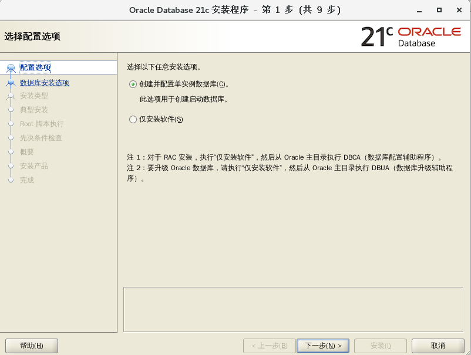
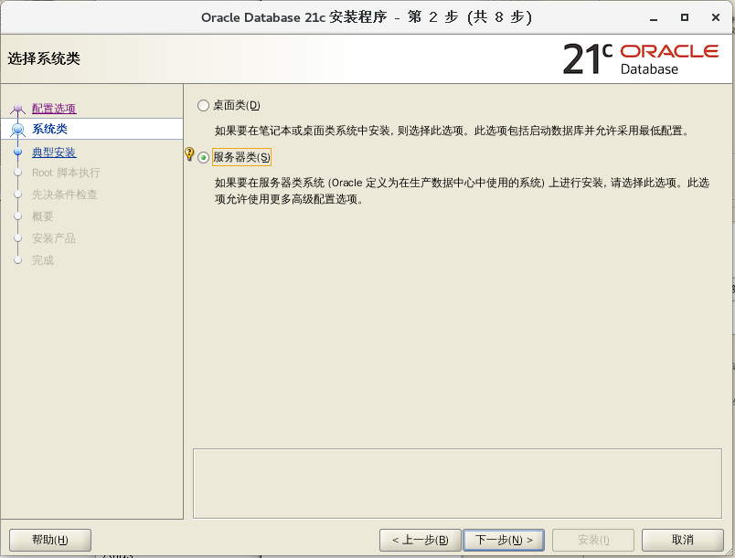
现在选：
这里我选择的是企业版
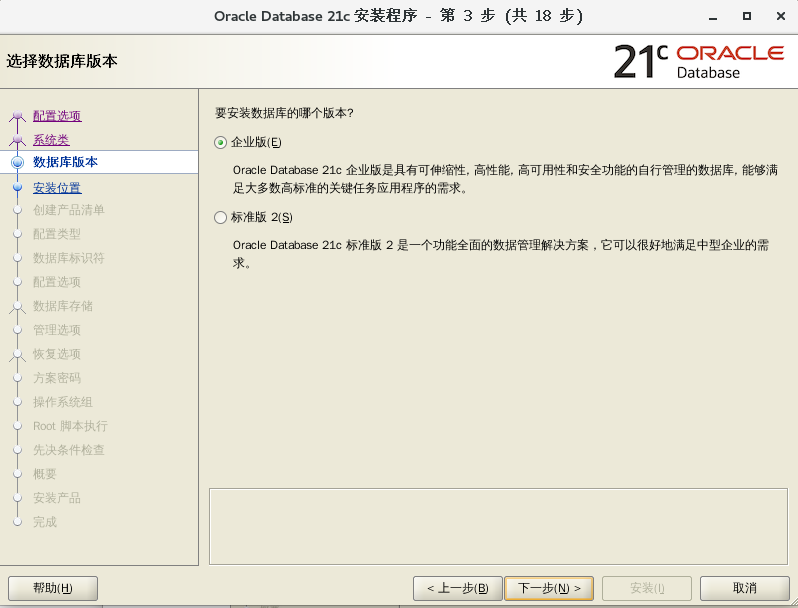
安装位置, 安装位置默认即可
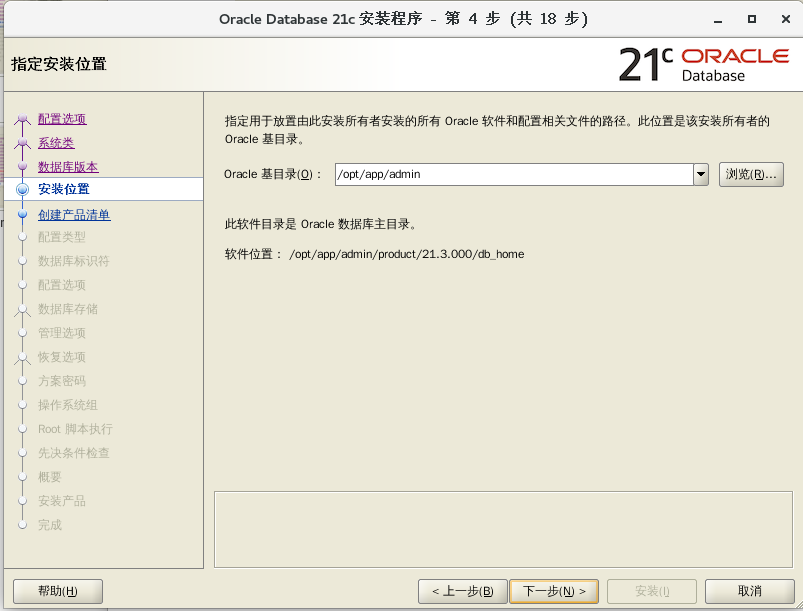
next step: oraInventory group name:
admin
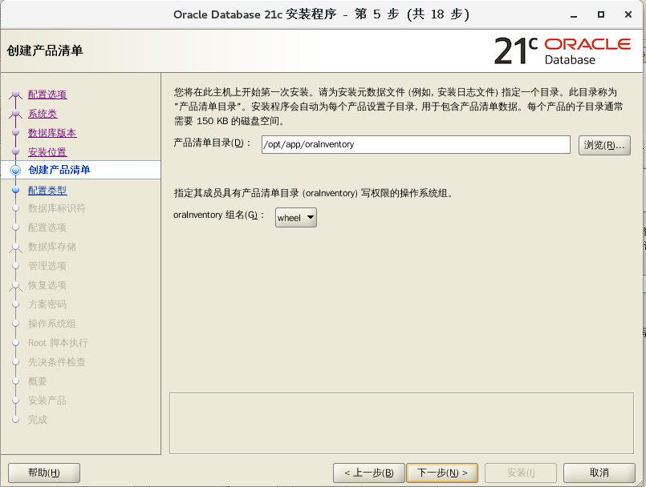
类型配置, 常规即可
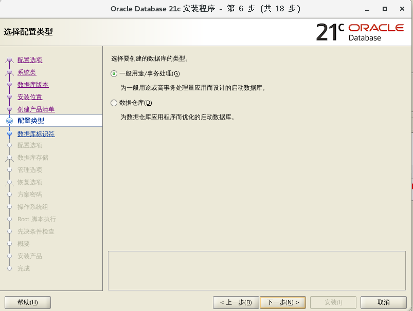
数据库标识符配置, 这个取消候选创建容器数据库，一般用不到。
GLOBAL ID:drugdb
SID: drugdb
可插入数据库名：pdbdrugdb

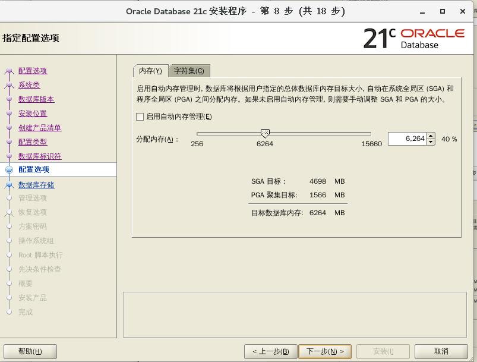
字符集 UTF-8（21c no
example）
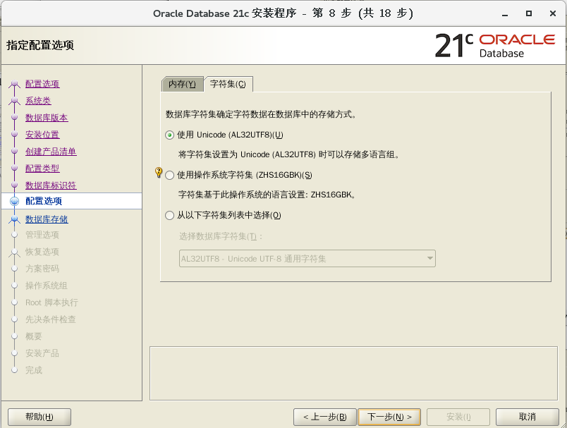
next:
软件存放目录，之前预设好的
数据存储的位置
默认 文件系统
file system:
/opt/app/admin/oradata
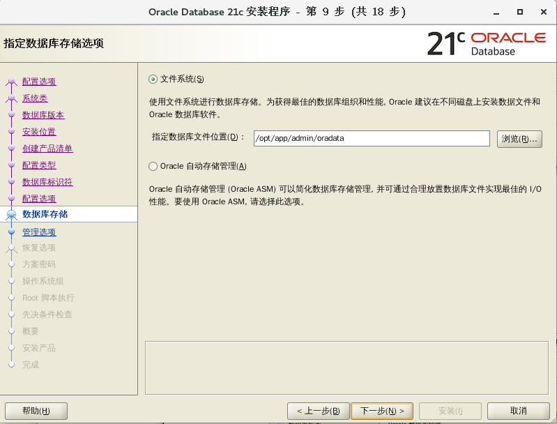
管理选项配置
如想用云端控制台的可配置这里。
默认下一步
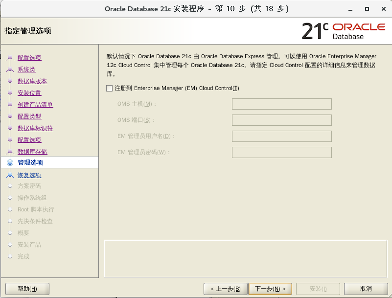
恢复选项配置
设置后，后面出现问题可以进行数据恢复，不过会占用很多资源。
开启: /opt/app/admin/recovery_area
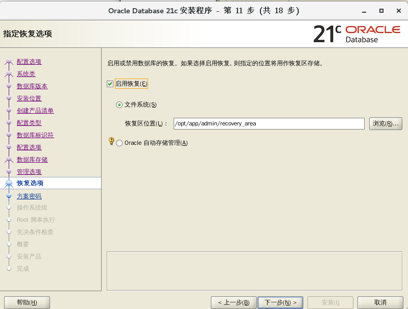
方案口令配置
推荐大小写字母+数字，不要包含特殊字符 wtsgyh19xx
no@#
请根据安装方式以及物理内存大小配置内存参数。在该页面中默认选择典型配置，仅需要调整内存大小即可
配置操作系统组
这里也是直接选择默认即可（不要用： oper !）
passwd: wtsgxx19xx no@ 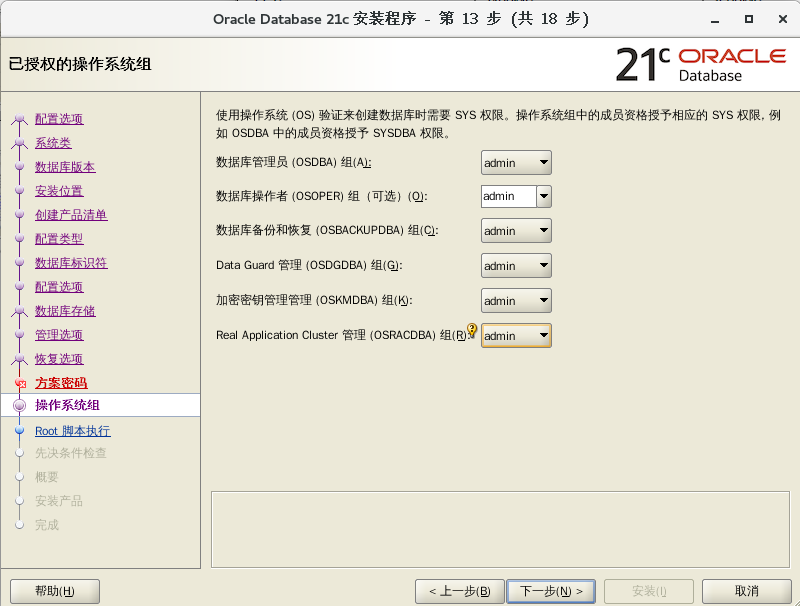
点下一步:
18) root 脚本执行权限配置
root 用户信息配置
输入OS的 root 用户的密码: 后面自动执行
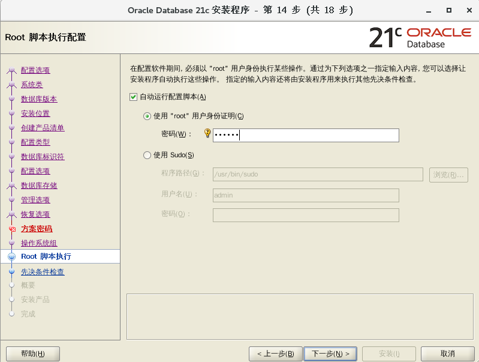
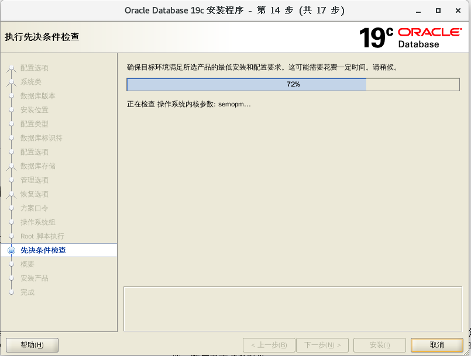
如果报:
现在ok
19) 安装检查 shmall: => 4605368
[root@localhost db_home]# vi
/etc/sysctl.conf shmall
改为 => 4605368
[root@localhost db_home]# sysctl -p
# rpm -ivh
/opt/app/compat-libstdc++-33-3.2.3-72.el7.x86_64.rpm
准备
中...
################################# [100%]
正在升级/安装...
1:compat-libstdc++-33-3.2.3-72.el7
################################# [100%]
[root@PC104 db_home]# sudo mkswap /root/swapfile
正在设置交换空间版本 1，大小 = 16777212 KiB
无标签，UUID=d316db23-cdfb-4069-8df0-44f635ab90af
[root@PC104 db_home]# sudo swapon /root/swapfile
swapon: /root/swapfile：不安全的权限 0644，建议使用 0600。
[root@PC104 db_home]# sudo swapon -s
文件名 类型 大小 已用 权限
/dev/voi0p5 partition 8388604 0 -1
/root/swapfile file 16777212 0 -2
现在是不是可以了？？？？？！！！！！！: 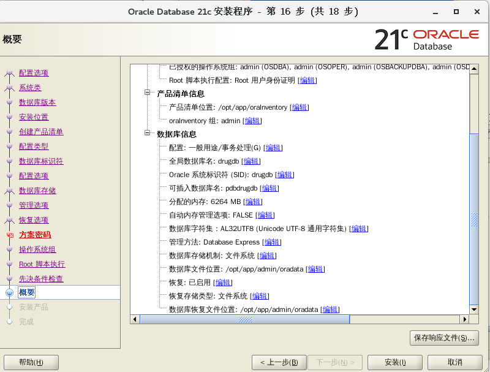
summary set
软性限制: 最大堆栈大小 - 此先决条件测试最大堆栈大小的软性限制是否设置正确。
详细资料:
- PRVG-0449 : 在节点 "localhost" 上找不到最大堆栈大小的相应软性限制 [预期 >= "10240"; 找到 = "8192"]。
- 原因: 集群验证实用程序确定在所指示节点上的 所指示软性限制设置不符合 Oracle 提出的适当操作建议。
- 操作: 修改资源限制以满足要求并接受操作系统 特定的度量, 以确保先使更正的值 对于当前用户生效, 然后再重试此检查
20) 开始安装 点安装即可
安装过程中 需要收到自动执行脚本提示：
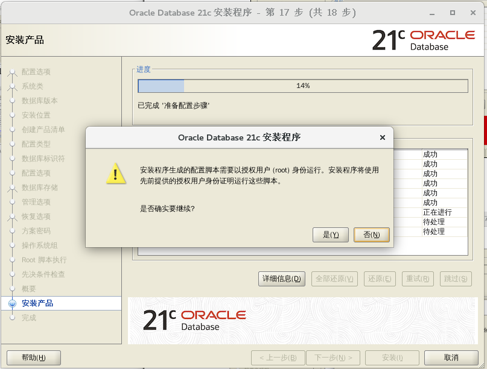
自动搞完即可!!!!!
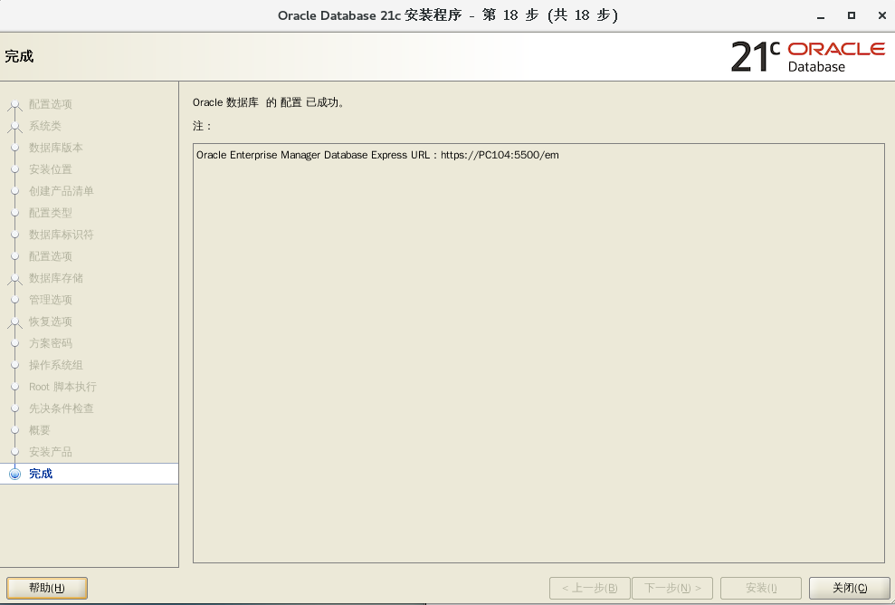
可能 need: run
#dbca to create drugdb
???why???? due to the env: db_home
<==>dbhome(!!!!!)
3 启动服务
#cd /opt/app/admin/product/21.3.000/db_home/bin
#lsnrctl start
#sqlplus /nolog
#connect /as sysdba
#startup
SQL> startup (机房：wtsgyh1972
no@#)
当启动数据库或者创建数据库时都可能出现ORA-27125错误，我在CENTOS 7.9上
安装Oracle 19.3.000，startup时就遇到了这个错误
ORA-27125: unable to create shared memory segment
Linux-x86_64 Error: 28: No space left on
device //
经查，该错误是由于无法分配共享内存段引起！！
Additional information: 3822
Additional information: 11307843584
#free -h 发现系统的可用内存很多
#df -h 发现tempfs系统相关挂载点 也有很多的空间；
#ipcs -l 发现
最大段数 = 4096
最大段大小 (千字节) = 18421472
最大总共享内存 (千字节) = 18421472
最小段大小 (字节) = 1
[root@localhost bin]# ipcs -u
---------- 共享内存状态 ------------
段已分配 49
页已分配 2792980
页驻留 2780899
页交换 0
# vi /etc/sysctl.conf
kernel.shmall = 46053680 //mod
here!!!!!!!!!!!!!!
SQL> startup
//again !!!!!!!!!!!!!
ORACLE 例程已经启动。
Total System Global Area 1.1341E+10 bytes
Fixed Size
12343896 bytes
Variable Size
2013267368 bytes
Database Buffers 9294577664
bytes
Redo Buffers
21209088 bytes
数据库装载完毕。
数据库已经打开。
ERROR:
ORA-12547: TNS: 丢失连接
now ok!!
oracle21c 创建用户
创建用户并分配权限
SQL>create user c##biodbuser
identified by wtsgyh1972;
no @# for oracle 21.3 (对于oracle
21.3不需commit;
就可以在myeclipse/sqldeveloper(23.1.0.097)中refresh看到用户模式了！！！！！！sure)
alter user c##drugdbuser identified by
wtsgyh19xxxxxx; //可以改用户
密码
SQL>grant connect,resource,dba to c##biodbuser;
SQL>conn
c##drugdbuser/wtsgyh@drugdb; //一
定要这样，不然就把表建到SYS模式下了！！！！！！！！！！！！！！！
CREATE TABLE biodbstd( STD_ID NUMBER NOT NULL,
STD_NAME VARCHAR2(100) NOT NULL, STD_NUM
VARCHAR2(50) NOT NULL,STD_MAJOR VARCHAR2(50) NOT
NULL, STD_PASSWORD VARCHAR2(200), STD_RECORDS NUMBER
NOT NULL);
现在就有表位于： c##drugdbuser 模式下了！！！！！！！！！！！！！！！！！！！！
使用plsql连接
这就表示成功!!!
接下来你可以尽情玩耍啦!!!
create tablespace biodrugdb datafile '/opt/app/oracle/oradata/DRUGDB/biodrugdb.dbf'
size 2048M reuse autoextend on next 40M maxsize
unlimited default storage(
initial 128k next 128k minextents 2 maxextents
unlimited);
---rename
tablespace
alter tablespace biodrugdb to BIOHDDB;
--search all tables
select * from dba_tables;
select * from dba_tabl_columns;
---find data file
select name from v@datafile;
---find tablespace
select * from dba_tablespaces;
select * from dba_tablespaces t where
t.TABLESPACE_NAME = 'BIOHDDB';
select * from dba_tables t where t.TABLE_NAME = 'T_ORDER';
insert
into t_order(id,name) values(1003, 'apple');
select * from t_order;
sqldeveloper: biopdbuser PDBDRUGDB
1.ORA-12514, TNS:listener does not currently know of service requested in connect descriptor
2.状态: 失败 -测试失败: ORA-01045: user C##BIODBUSER lacks CREATE SESSION privilege; logon denied
need:
SQL> alter pluggable database PDBDRUGDB open;
sql>alter session set container=PDBDRUGDB;
sql>create USER biopdbuser IDENTIFIED BY biopdb123; (IF NOW CONNECT TO pdbdrugdb will say: ORA-01045: user C##BIODBUSER lacks CREATE SESSION privilege; logon denied)
sql> grant create session,resource to biopdbuser; (now biopdbuser can connect to PDBDRUGDB)
SQL> SHOW PDBS
CON_ID CON_NAME OPEN MODE RESTRICTED
---------- ------------------------------ ---------- ----------
2 PDB$SEED READ ONLY NO
3 PDBDRUGDB MOUNTED
SQL> create user c##biodbuser identified by wtsgyh1972;
用户已创建。
SQL> grant connect,resource,dba to c##biodbuser;
授权成功。
SQL> alter pluggable database PDBDRUGDB open;
插接式数据库已变更。
SQL> show pdbs
CON_ID CON_NAME OPEN MODE RESTRICTED
---------- ------------------------------ ---------- ----------
2 PDB$SEED READ ONLY NO
3 PDBDRUGDB READ WRITE NO
sql>alter session set container=PDBDRUGDB;
now can connect to PDBDRUGDB WITH biopdbuser:
sqlplus sys/wtsgyh1972@210.45.105.104:1521/PDBDRUGDB
$ sqlplus biopdbuser/biopdb123@PDBDRUGDB (don't use: sqlplus biodbuser/biodb123@210.45.105.104:1521/PDBDRUGDB)
连接到:
Oracle Database 21c Enterprise Edition Release 21.0.0.0.0 - Production
Version 21.3.0.0.0
SQL> show user
USER 为 "BIOPDBUSER"
https://localhost:5500/em 19C的变成cloud了!!!
****************************** 以下部分可以作为后期使用
10. 启动监听及数据库
10.1. 启动监听
[catalyst@localhost app]$
/opt/app/admin/product/12.2.0/dbhome_1/bin/lsnrctl
status
<<<<<<<<<<<<<<<<<<<<<see
the status
LSNRCTL for Linux: Version 12.1.0.1.0 - Production
on 17-JUL-2022 17:52:59
Copyright (c) 1991, 2013, Oracle. All rights
reserved.
Connecting to
(DESCRIPTION=(ADDRESS=(PROTOCOL=TCP)(HOST=localhost)(PORT=1521)))
STATUS of the LISTENER
------------------------
Alias
LISTENER
Version
TNSLSNR for Linux: Version 12.1.0.1.0 - Production
Start
Date
17-JUL-2022 17:19:25
Uptime
0 days 0 hr. 33 min. 35 sec
Trace
Level
off
Security
ON: Local OS Authentication
SNMP
OFF
Listener Parameter File
/DATABAK/app/oracle/product/12.1.0/dbhome_1/network/admin/listener.ora
Listener Log
File
/DATABAK/app/oracle/diag/tnslsnr/localhost/listener/alert/log.xml
Listening Endpoints Summary...
(DESCRIPTION=(ADDRESS=(PROTOCOL=tcp)(HOST=localhost)(PORT=1521)))
(DESCRIPTION=(ADDRESS=(PROTOCOL=ipc)(KEY=EXTPROC1521)))
Services Summary...
Service "DBUA2148377" has 1 instance(s).
Instance "DBUA2148377", status BLOCKED, has 1
handler(s) for this service...
Service "drugdb" has 1 instance(s).
Instance "drugdb", status RESTRICTED, has 2
handler(s) for this service...
The command completed successfully
[catalyst@localhost bin]$ netstat -tunlp | grep
1521
(Not all processes could be identified, non-owned
process info
will not be shown, you would have to be root
to see it all.)
tcp6
0 0
:::1521
:::*
LISTEN 9918/tnslsnr
最终的数据创建结果为：
可以打开网页： https://localhost:5500/em (need flash
player????)
sys/system: passswd :
WTSgyh1972@@@@@@@@@@@@@@@@@@@@@@@@@(windowsOK)
CENTOS 7下面不能用firefox打开网页，因为需要flash,
但可以用google的chrome:
#rpm -ivh
/DATABAK/oracal12cdatabase/google-chrome-stable_current_x86_64.rpm(可能需要下
面几步操作)
#yum install liberation-fonts (需要的字体)
#yum provides libvulkan.so.1
#yum install vulkan
(好象也不行，还是需要：)
tar -xzvf
flash_player_npapi_linux.x86_64.tar.gz
sudo cp
libflashplayer.so
/usr/lib64/mozilla/plugins
cd
/usr/lib64/mozilla/plugins
sudo chmod 755
libflashplayer.so (好象还是不行？？？)
10.2. 启动/关闭数据库
本地以sqlplus / as sysdba方式登录时，采用的是操作系统验证的方式，所以用户名/密码输与不输入是一样的。
oracle数据库登录认证的2种方式[catalyst@localhost app]$ /DATABAK/app/oracle/product/12.1.0/dbhome_1/bin//sqlplus /nolog
Copyright (c) 1982, 2013, Oracle. All rights reserved.
SQL> conn as sysdba
Enter user-name: sys
Enter password:
Connected.SQL> startup
ORACLE instance started.
Total System Global Area 7465926656 bytes
Fixed Size 2698976 bytes
Variable Size 1409286432 bytes
Database Buffers 6039797760 bytes
Redo Buffers 14143488 bytes
Database mounted.
Database opened. <<<现在就可以用网页查看了：https://222.20.94.229:5500/
SQL> shutdown immediate
Database closed.
Database dismounted.
ORACLE instance shut down. 现在就不能用网页： https://222.20.94.229:5500/
https://222.20.94.229:5500/em
1、操作系统认证：也叫本地认证，oracle认为操作系统是可靠的，只要能登录到操作系统，就能访问数据 库。安装oracle时默认的就是这种认证方式
这种情况下，任何用户密码以sysdba角色都可以连接数据库，实际上都是作为sys登录的
2、口令文件认证：oracle认为操作系统是不可靠的，若要访问数据库，必须要输入用户密码
10.3. 查看数据库是否为CDB
SQL> set line 1000
SQL> select name, decode(cdb, 'YES','Multitenant
Option enabled', 'Regular l2c Database: ')
"Multitenant Option", open_mode, con_id from
v$database;
NAME Multitenant
Option
OPEN_MODE
CON_ID
--------- --------------------------
-------------------- ----------
DRUGDB Regular l2c
Database: READ WRITE
0
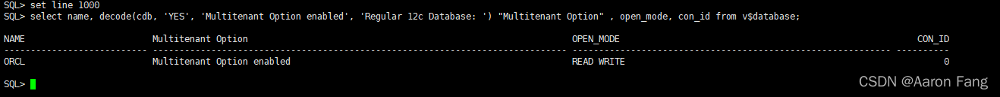
YES表示该数据库是CDB,如果是NO表示是NO-CDB(普通数据库)
10.4. 查看当前容器（Container）
SQL> show con_name
CON_NAME
------------------------------
Non Consolidated
###########################检查数据库状态:
SQL> select status from v$instance;
STATUS
------------
OPEN
11.Oracle12c 创建用户、授权
SQL> create user drugdbuser IDENTIFIED BY
wtsgyh;
User created.
[catalyst@localhost bin]$
/DATABAK/app/oracle/product/12.1.0/dbhome_1/bin/sqlplus
drugdbuser/wtsgyh@drugdb
Enter user-name: drugdbuser
Enter password:
Connected to:
Oracle Database 12c Enterprise Edition Release
12.1.0.1.0 - 64bit Production
With the Partitioning, OLAP, Advanced Analytics and
Real Application Testing options
12c推出了可插拔库，管理用户也分为两种：本地用户和公用用户
本地用户是指在插拔数据库（PDB）中的用户，和12c之前的版本没有什么区别。公用用户只存在于可插拔环 境中，在传统的数据库环境中不存在这种应用。怎么理解公用用户呢？可以简单的把它当做容器（CDB）用户， 可以在各个通用与所有可插拔数据库（PDB）中使用。这个用户就像是小区的物业管理员，由小区物业来任命并 且可以管理小区所有用户。
如果第一次登录CDB数据库，用传统方式创建用户会报错，这就是因为在CDB环境创建的用户为公共用户，语 法和普通用户不同
11.1. 创建公用用户
说明：公用用户需要使用C##或者c##作为该用户名的开头
注意：sysdba身份登录进入数据库
如果使用传统创建用户的方法会报错
11.2.授权
11.2.1. 所有授权
给用户赋予所有权限：grant connect,resource,dba
to c##kmhd;
提示：可通过登录web可视化管理页面授权https://x.x.x.x:5500/em/因为新建的用户和
默认的用户是锁住的，没有权限。所以新建用户后要给用户赋予权限。
1） 给用户赋予登录的权限：grant createsession to 用户名
2） 给用户赋予表操作的权限：grant create table to用户名（包含有create
index权限, alter table, drop table权限）
3） 给用户赋予表空间操作的权限：grant unlimited tablespace
to用户名
4） 给该用户赋予访问任务表的权限：grant select any table to
用户名（同理可以赋予update和delete）
5） 给c##kmhd用户赋予xxx用户的a表的查询的权限： 例如：grant
select on xxx.a to
c##kmhd（同理可以有alter，drop，insert等权限）
6） 更多赋权参考：
https://www.cnblogs.com/lanqingzhou/p/8145272.html
11.3.验证
11.3.1. 创建表空间
SQL> CREATE TABLE DRUGCOURSEUSER(STD_ID NUMBER
NOT NULL, STD_NAME VARCHAR2(100) NOT NULL, STD_NUM
VARCHAR2(50) NOT NULL, STD_MAJOR VARCHAR2(50) NOT
NULL, STD_PASSWORD VARCHAR2(200), STD_RECORDS NUMBER
NOT NULL, ISVIP VARCHAR2(200));
Table created.
11.3.2. 插入表数据: 批量导入数据
以下是成功的例子控制文件（control.ctl）中内容如下：
OPTIONS (skip=1, rows=10)
LOAD DATA
CHARACTERSET ZHS16GBK
INFILE 'drugusers.csv'
append into TABLE DRUGCOURSEUSER
FIELDS TERMINATED BY ',' OPTIONALLY ENCLOSED BY '"'
(
STD_ID,
STD_NAME,
STD_NUM,
STD_MAJOR,
STD_PASSWORD,
STD_RECORDS DECIMAL EXTERNAL,
ISVIP)
在linux下执行SQL*Loader：
先在myeclipse中清空表（当然是在先把数据库连接正确）：
SQL>truncate table
"DRUGDBUSER"."DRUGCOURSEUSER"
然后点那个右向小三角即可。
将文件:contrl.ctl和drugusers.csv放到目录/DATABAK/app
/catalyst/product/11.2.0/dbhome_1/bin
#cd
/DATABAK/app/catalyst/product/11.2.0/dbhome_1/bin
数据格式为：
******************************************************************************************
2018001,aaa,U201812130,yyyy,U201812130,1000,N
<=共七列数据哟！！！！！！
*******************************************************************************************
[catalyst@localhost bin]$
/DATABAK/app/oracle/product/12.1.0/dbhome_1/bin/sqlldr
userid=drugdbuser/wtsgyh@drugdb control=contrl.ctl
log=resulthis.out
SQL*Loader: Release 12.1.0.1.0 - Production on Mon
Jul 18 19:09:39 2022
Copyright (c) 1982, 2013, Oracle and/or its
affiliates. All rights reserved.
Path used:
Conventional
Commit point reached - logical record count 4
Table DRUGCOURSEUSER:
4 Rows successfully loaded.
<==================为何会少加一行？？？？
也可以用图形界面进行（在eclipse 2021中装上那个插件Dbeaver 22,很简单的）：
11.3.3. 验证表数据
验证新插入的表的数据：新建一个连接窗口，查看是否插入成功，并查看插入的中文是否乱码
select * from DRUGCOURSEUSER;

12. Web登录Oracle管理页面
https://222.20.94.229:5500/em (in windows
OK!!!!!!!!!!!! need flash player!!!!!!!!!!!!!!!I
sure in windows 7 can see!!!!!!!!!!!20220717)
CENTOS 7:
#
用户sys/WTgyh1972@@@@@@@@@@@@@@@@@@
https://222.20.94.229:5500/: can
use: SYSTEM/WTSgyh1972@###### (sure in firefox
in linux)
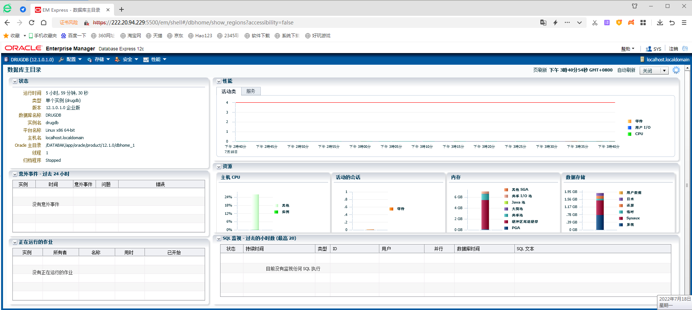
13.常见 问题
13.1 新建用户第一次操作数据库
1）在用PL/SQL进行登录时，出现：”ora-01045 :user system lacks
create session privilege; logon denied”
原因：该用户没有创建session会话的权限
2）如果以创建的用户登录，创建表，提示权限不足，则再次赋予创建表的权限
3）给创建的表插入表数据,提示ORA-01950: 对表空间 ‘USERS’ 无权限,sys用户执行
说明：connect是赋予连接数据库的权限，resource
是赋予用户只可以创建实体但是没有创建数据结构的权限
4） 第三步出错，无要求，直接赋予dba权限！
13.2 安装Oracle12c数据库，安装完成后用浏览器访问https://localhost:5500/em，
发现无论我怎么用户名和密码都不能登录，一直提示账号或口令错误
错误原因：没有设置用户名的口令
解决办法：使用DBCA新建一个数据库
打开“Database Configuration Assistant”，
新建一个数据库
新建成功后有个如下图所示的弹窗，点击“口令管理”进入口令管理设置口令
(base) [catalyst@localhost ~]$ cd
/DATABAK/app/oracle/product/12.1.0/dbhome_1/bin/
(base) [catalyst@localhost bin]$ ./dbca